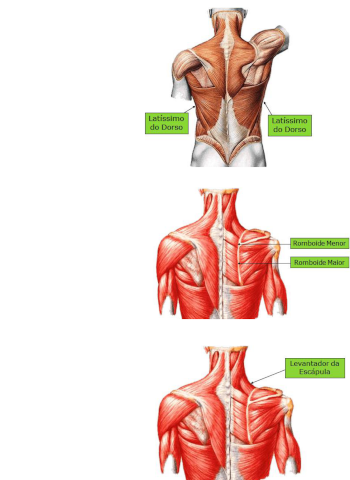
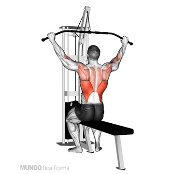
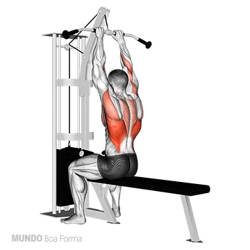
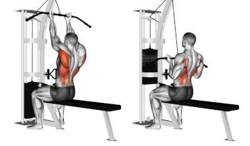
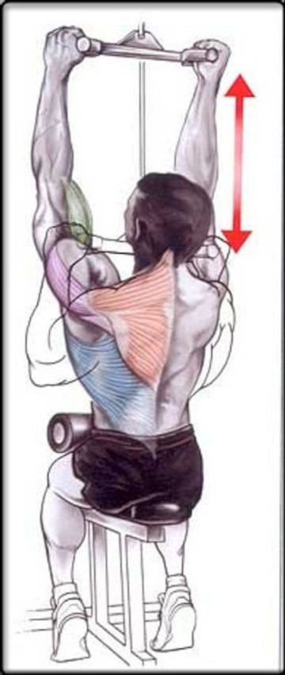
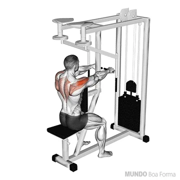
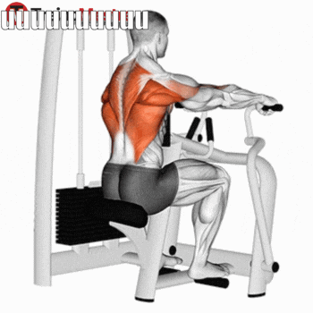

Bíceps
9 Séries

Ele auxilia o músculo braquial para realizar a flexão do cotovelo. Curiosamente, ele tem papel secundário nessa função de flexão, sendo o músculo braquial o principal flexor do cotovelo. A sua outra função é a de supinação, que é a rotação do antebraço (movimento de colocar a palma da mão para cima).O bíceps tem duas cabeças, a cabeça curta e a cabeça longa
ROSCA BICEPS NO BANCO SCOTT

3 séries (12-10-8)
Os principais músculos recrutados na rosca scott na máquina são: Bíceps braquial, braquial e o Braquiorradial.
ROSCA DIRETA PEGADA ABERTA

3 séries (12-10-8)
Os principais músculos recrutados na rosca scott na máquina são: Bíceps braquial, braquial e o Braquiorradial.
ROSCA CONCENTRADA UNILATERAL COM HALTER

3 séries (12-10-8)
A rosca bíceps concentrada unilateral com halter é um exercício de isolamento para o bíceps capaz de levar à hipertrofia muscular. trabalha os musculos: Bíceps braquial, braquial e o Braquiorradial.
Dorsal - Largura
9 séries
Músculos extrínsecos superficiais do dorso: músculos trapézio, latíssimo do dorso, romboide maior, romboide menor e levantador da escápula. Músculos extrínsecos intermediários do dorso: músculos serrátil posterior superior e serrátil posterior inferior.
PUXADA COM BARRA FRENTE ABERTA PEGADA PRONADA
3 séries (14-12-10)
Este exercício trabalha vários músculos das costas, como o platíssimo do dorso, a região média das costa e de forma secundária os bíceps e os ombros, ele é classificado como um movimento de fortalecimento, sendo também indicado para iniciantes.
PUXADA FECHADA - PEGADA PRONADA OU SUPINADA

3 séries (14-12-10)
A puxada frontal pronada (foto1) ou supinada(foto2), à sua escolha, trabalha principalmente os músculos do grande dorsal e do bíceps. Caso escolha a pegada supinada, é feita com a pegada invertida, segurando a barra com as palmas das mãos voltadas para o corpo e na largura dos ombros
PUXADA PULLEY FRENTE PEGADA NEUTRA
3 séries (14-12-10)
Trabalha vários músculos sendo eles o latíssimo do dorso, rombóides, trapézio deltoíde posterior e bíceps.
Dorsal - Espessura
9 Séries
FLY INVERSO NA MAQUINA
3 séries (14-12-10)
O voador inverso é um exercício que trabalha os músculos das costas (os rombóides), trapézios e dos ombros (deltoides posteriores).
REMADA MAQUINA COM CABO PUXADA BAIXA

3 séries (14-12-10)
Remada baixa é considerado um dos melhores exercícios para trabalhar costas. Quando se faz remada baixa, a pessoa trabalha diversos músculos, mas principalmente o latíssimo do dorso e o trapézio, nas porções inferior e superior.
REMADA MÁQUINA COM APOIO PEGADA SUPINADA
3 séries (14-12-10)
Conhecida como um dos melhores exercícios para melhorar a força das costas, a remada também ajuda a combater a má postura, colocando o ombro de volta em uma posição neutra. Na pegada supinada, com a palma das mãos apontadas para cima, temos uma ação mais intensa do bíceps e do braquial. Os flexores do punho também ajudam no movimento.